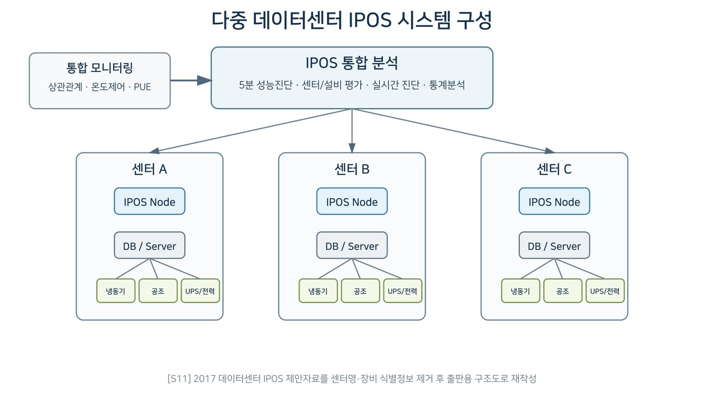

데이터로 찾는 산업·건물 에너지절감 실무 — 101쪽
CASE 38 | DEEP DIVE — 다중 데이터센터 PUE·냉방효율 실시간 진단 및 IPOS 성능최적화 다수 IDC 의 전체전력·IT 전력·냉방전력과 냉방기·냉동기·냉각탑 데이터를 통합해 PUE 와 냉방효율을 실시간 관리하는 플랫폼 구축 제안 사례다. 그림 23-1. 다중 데이터센터 IPOS 시스템 구성. [S11] 2017 데이터센터 IPOS 제안자료를 센터 명·장비 식별정보 제거 후 출판용 도식으로 재작성.

인쇄본 기준 p. 101